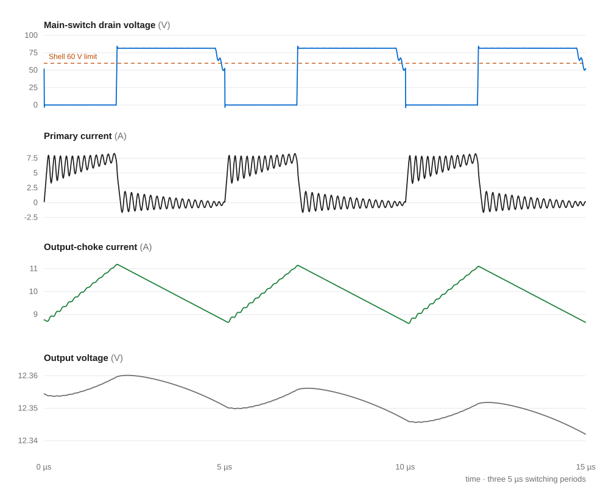

In progress · Jun 2026 – present
48 V to 12 V isolated power converter.
A 120 W active-clamp forward converter for a hydrogen fuel-cell vehicle, covering magnetics, synchronous rectification, sensing, protection, and digital control. I’m also testing a two-switch forward version so the switch nodes stay under the Shell Eco-marathon’s 60 V limit.
Role Powertrain project engineer · Bruin Racing Supermileage
- 120 W
- 12 V · 10 A target at 200 kHz
- < 0.8%
- output ripple across 8 load points in LTspice
- 60 V
- Shell limit the two-switch version targets
